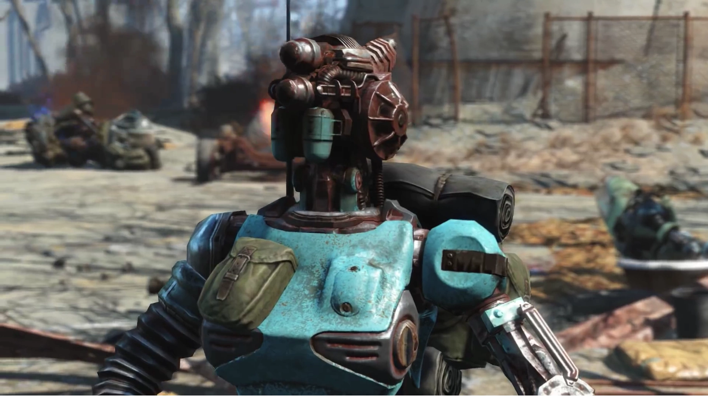
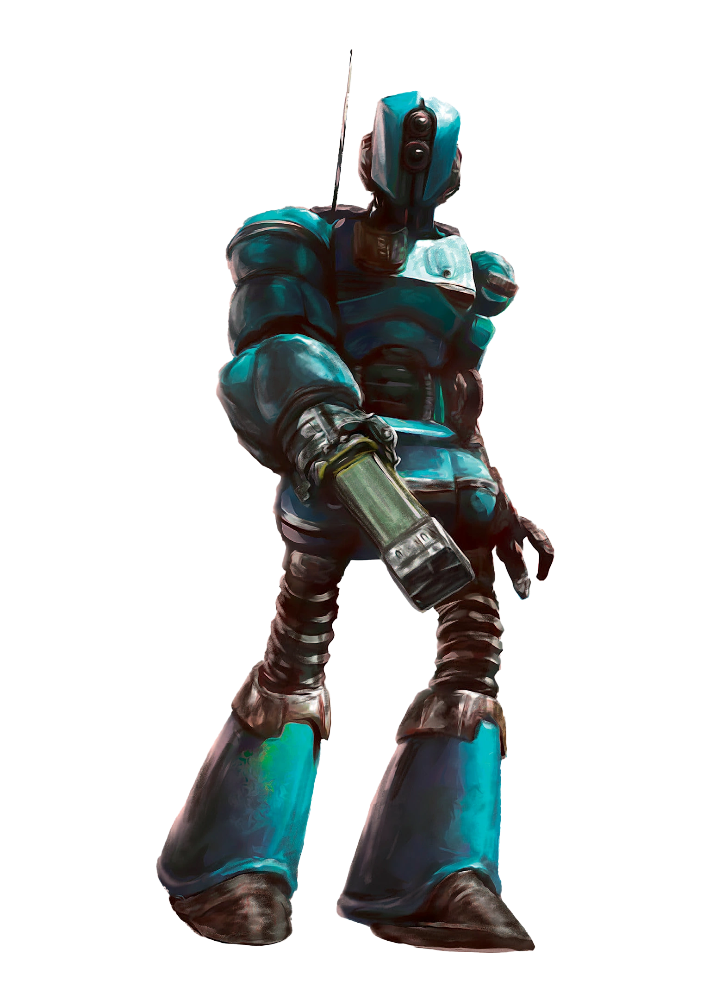

Ada
エイダ
エイダ（Ada）は、DLC『Automatron』にて登場するロボット・コンパニオンである。アサルトロンをベースに多数のジャンクパーツで改造されたキメラロボットであり、自身の仲間を皆殺しにした「メカニスト（The Mechanist）」への復讐を誓い、主人公に協力を要請する。
生い立ちと背景 (Background)
キャラバンの護衛ロボット
エイダは元々、ジャクソン（Jackson）というキャラバンのリーダーによって造り出されたロボットである。コア部分はアサルトロンだが、プロテクトロンやセントリーボットなどのパーツがツギハギに搭載されている。彼女が所属するキャラバンは連邦のあちこちを巡って廃品を回収し、修理や交易を行う集団だった。
ジャクソンはエイダをただの「護衛用機械」ではなく一つの人格を持つ「友人」として扱っており、彼女の『パーソナリティ・モード』を常にオンの状態で固定していた。これによりエイダはロボットでありながら豊かな感情と人間的な思考能力を獲得し、ジャクソンやキャラバンのメンバー達を「家族」として深く愛するようになった。
ワッツ・エレクトロニクスの悲劇
2287年、連邦に「平和をもたらす」という歪んだ任務をインプットされたメカニストのロボット軍団が、ジャクソンのキャラバンを「排除対象」として襲撃した。エイダは懸命に防衛したものの、多勢に無勢であり、ワッツ・エレクトロニクスの近辺で彼女を残して人間の仲間達は全員殺害されてしまった。
たった一機生き残ったエイダは深い悲しみと後悔、そしてメカニストに対する激しい怒り（ロボットが表現できる限りの感情）に包まれた。「なぜ自分がもっとうまく守れなかったのか」「パーソナリティ・モードなど切られて、何も感じないただの機械であればこんなに苦しまなくて済んだのに」と思い悩む彼女は、偶然通りかかった主人公に助けられ、共にメカニストの野望を打ち砕くための復讐の旅へ出ることになる。
コンパニオンシステム (Companion Mechanics)
Automatron DLCの目玉機能である「ロボット作業台」のチュートリアル役も兼ねた、極めて優秀でカスタマイズ性の高い同行者である。
パーツ換装による無限のカスタマイズ
- ロボット作業台での改造: エイダはロボット作業台を利用して、腕・脚・胴体・頭部・音声に至るまで全てのパーツを自由に改造することが可能である。両手に強力なガトリングレーザーを装備させたり、脚をホバー（Mr.ハンディ型）にして機動力を上げたり、あるいは積載量を極限まで特化させた「動く倉庫」にすることもできる。
- モジュール機能の搭載: パーツ改造によって、「ハッキング」や「ロックピック」のモジュール機能を持たせることができる。これにより、主人公自身のPerkが足りていなくとも、エイダに命令して端末や金庫を突破させることが可能になる。
好感度（Affinity）が存在しない
エイダの最大の特徴は、ドッグミート（Dogmeat）と同じく好感度システムが存在しないことである。
彼女は主人公のいかなる行動（善行でも悪逆非道な殺人でも）に対しても評価を下すことがなく、怒って離脱することもない無条件の忠誠心を持つ。そのため、プレイヤーは彼女の目を気にすることなく自由なロールプレイを楽しむことができる。
ただし、好感度の上限がないため、ロマンスは不可であり、最大時の「固有Perk」を取得することもできない。
関連する主要クエスト (Quests)
- Mechanical Menace：DLC『Automatron』の開始クエスト。ワッツ・エレクトロニクス近くでロボット軍団に襲われている彼女を救出する。
- A New Threat / Headhunting / Restoring Order：各地のロボボス（ロボブレイン）を倒し、エイダの頭部に特殊なレーダービーコンを取り付けながら、メカニストの隠れ家であるロブコ・セールス&サービスセンターへの道を切り開いていく一連のクエスト。
- Rogue Robot：メカニスト関連の事件を解決した後、連邦に残存している暴走ロボット達を処理する繰り返し（Radiant）クエスト。彼女がクエストギバーになる場合がある。
ギャラリー (Gallery)


開発秘話・小ネタ (Behind the Scenes)
- 英語音声の Rachel Robinson 氏は『ファイナルファンタジーXIII』のヲルバ＝ユン・ファングなどの吹替も担当している。
- 機械でありながら「嗅覚センサー」をシミュレートしているらしく、マイアラークの群れの近くを通ると「腐った魚の匂いがします」といった専用のセリフを発する。
- 彼女を連れてB.O.S.のプリドゥエンやボストン空港に行くと、「ジャクソンは技術を回収して回る彼ら（B.O.S.）を非常に警戒していました。刺激するのはやめましょう」と警告してくる。
- 足回りの仕様上、主人公がベルチバード（Vertibird）に乗って移動する際は、エイダは同乗できず「現地で合流します」と言って一時離脱する。
ロボット作業台の実装によって「Fallout 4最強のコンパニオン」とも名高い存在になったエイダちゃんです！最強のセントリーパーツやレーザーガトリングを組み込んでしまえば、どんな巨大クリーチャーも文字通り瞬殺してしまう恐ろしい火力を誇ります。
彼女の魅力はそのカスタマイズ性だけではなく、「心を持ったロボットの悲哀」というテーマをしっかり背負っているところでもあります。悲しみを紛らわせるために「ジャクソンがパーソナリティ・モードを切ってくれれば良かったのに」とぽつりと漏らすシーンはロボットSFの醍醐味であり、プレイヤーの胸を打ちます。
好感度を全く気にせず、連邦中を自由気ままに（悪事も含めて）探索できる使い勝手の良さから、DLC導入後は常に彼女を連れ歩いているプレイヤーも非常に多いのではないでしょうか。
This article was created by translating and editing Ada from Nukapedia: The Fallout Wiki.
Licensed under the Creative Commons Attribution-Share Alike License (CC BY-SA 3.0).
コミュニティ維持のため、寄付を受け付けております。
> COMMENTS